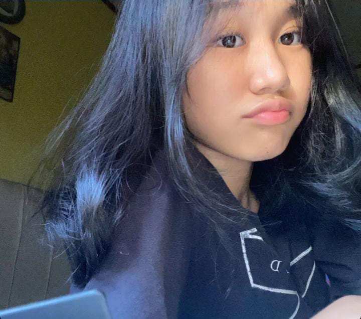

Haii wanita cantik, wanita baik, wanita kuat, Selamat hari perempuan sedunia ya cantikku
BALAS
haii sayang akuuu, di paragraf ini aku mau ngucapin banyak makasih ke kamu karna udah bikin hidup aku makin bewarna, bikin aku selalu bahagia sama kamu, aku ga nyesel ngehabisin semua rasa cinta aku ke kamu, karna emng seberuntung itu sama kamu, sayang bangetttt pokoknyaaa, kalo misal di suru rate dari 1-100% rasa sayang aku ke kamu, bakal aku kasi 1000000000/100000000 bahkan tak terhitung banget, maaf ya aku harus kangen terus sama kamuuu sampe bergantung banget sama kamu gini, gabis di tinggal lama lamaaa huhu ;( maaf yaa aku childsh, sayang maafin aku jugaa ya kalo aku ada salah?? mungkin banyak banget kesalahan aku yang bikin sayangku sakit hati, aku nyesel ngelakuin itu, aku ga mikir kedepanya perasaan kamu gimanaaa, maafin aku yaa? janji ga bakal aku ulangin lagi. maaf banget banyak kata kata aku yang bikin kamu kepikiran banget, ga ngertiin perasaan kamu, maaf pokoknya cuman bisa bilang maaf smaa memperbaiki semuanya, aku harap ini ga sia sia buat akuu ya sayang buat memperbaiki hubungan kita sama kamuu. love youuu cintaku sayangkuuu, aku ga bakal mau nyakitin hati sayangku pokoknya gamau, terima maaf aku yaa sayang? maaf ya aku salah. akuu ga seharusnya bersikap gitu sama kamu. akuu harap kamu tetep disisi aku & ingetin aku kalau aku salah dan aku usahain ga ngulangin lagi yaaaa, maaf karna ulah aku kamu jadii berubah :( aku bakal balikin seneng” kitaa kayaa duluu yaa sayanggg, aku harap kamu juga mau pertahanin hubungan kitaaaa
aku minta maaf sebesar besarnya maaf bgt kalo sama aku lebih banyk sakitnya, maaf juga kadang sifat aku suka egois, dan mash banyak kurangnya, intinya makasi apapun kondisi aku kamu masih mau nerima kekurangan aku, lovee youu, makasih juga udah sayang sama aku, ngasi aku perhatian selayak layaknya, cara kamu ngetreat aku udah best banget, kamu selalu ga ada kurang nya buat aku, walaupun ada kekurangan aku udah terima itu semua, love you my world